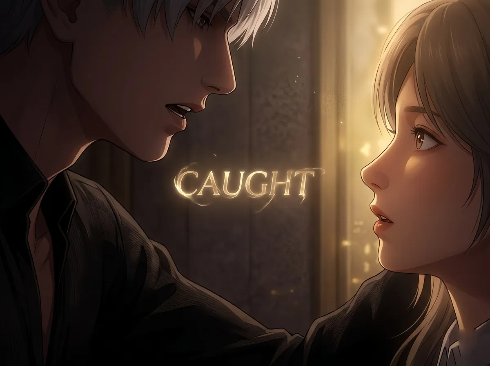
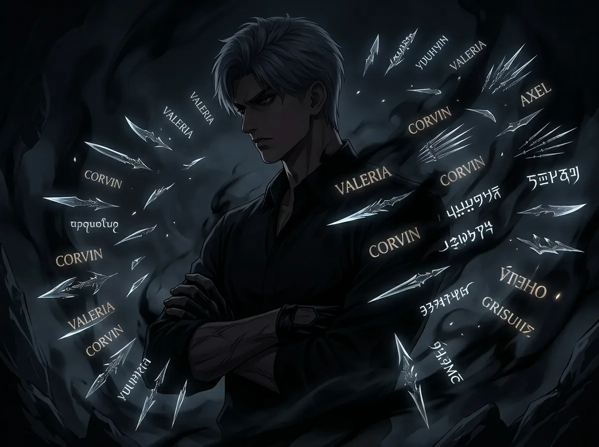
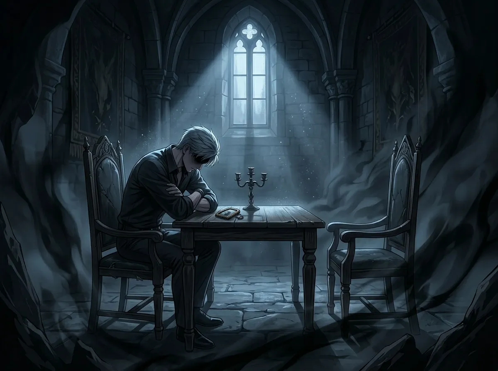
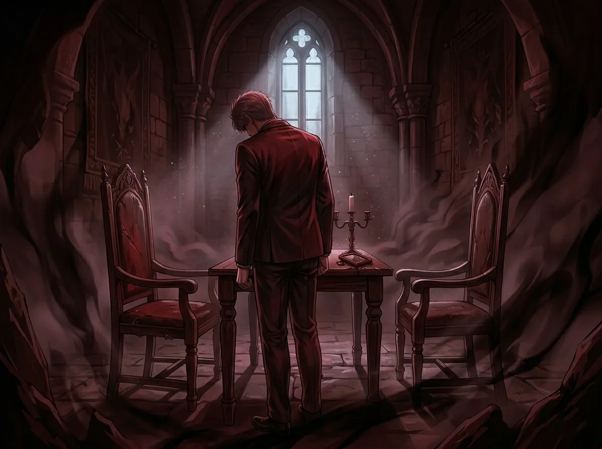
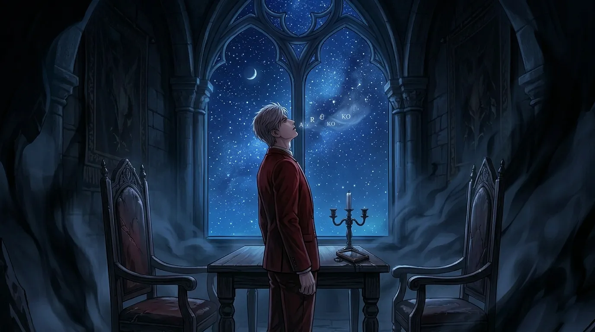
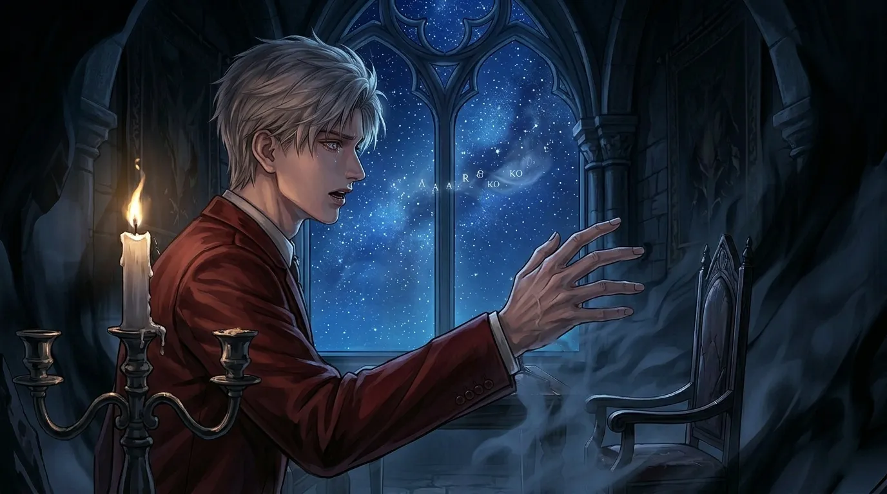

He almost did. Once. Then he decided never to.
He never says her name.
This is not an accident. This is not a habit. This is a choice.
He made it once. A long time ago. When he realized that saying her name out loud would change something. Would make her real in a way he couldn't control.
He could have said it. He almost did. There was a moment — a single, brief moment — when the word was on his tongue. He could have let it go. He could have spoken it into the air and let it exist.
He didn't.
This is the story of why.

It happened once.
She was standing near the window. Light was falling on her face. She said something — he doesn't remember what — and he turned to look at her. And the word was there. Right there.
Her name.
It was in his throat. On his tongue. Almost out. Almost real.
Then he stopped.
He closed his mouth. Turned away. Said something else. Something that meant nothing.
She didn't notice. She never noticed. That was the first time he realized she didn't see the effort. She didn't see the weight. She only saw the result: a man who never said her name.
Why did he stop?
Because he understood, in that moment, what it would mean to say it. A name is not just a sound. It is a claim. It is an acknowledgment. It is a door that, once opened, cannot be closed again.
Saying her name would have meant admitting that she mattered. That she was not just someone who passed through. That she was someone who stayed. In his mind. In his days. In the spaces between his sentences.
He wasn't ready for that. He didn't know if he would ever be ready.
So he stopped. He swallowed the word. He let it go.

Sylus knows names.
He has used them. He has collected them. He has traded them. In the N109 Zone, a name is currency. It is leverage. It is a weapon.
He knows that when you know someone's name, you have something over them. You can call them. You can summon them. You can hurt them.
He has done all three.
And he has seen what happens when someone's name is spoken in the wrong context. When it is used as a threat. When it is used as a weapon. When it is used to take something from someone who can't afford to lose it.
He is not going to let that happen to her.
For Sylus, silence is protection. Not for himself — for her.
If he never says her name out loud, then no one else can hear it. No one else can use it. No one else can take it and turn it into something dangerous.
He is not being mysterious. He is being strategic. He is building a wall around the one thing he can't afford to lose.
The irony is that he knows walls don't work. He has broken too many walls himself. But he builds them anyway. Because what else can he do?

Sylus has lost people.
He doesn't talk about it. He never talks about it. But the losses are there. In the way he hesitates. In the way he watches doors. In the way he never gets too close.
He has learned that attachment is dangerous. That caring is a vulnerability. That letting someone in is the first step toward losing them.
He is not afraid of losing power. He is not afraid of losing control.
He is afraid of losing her.
And that fear is so large, so overwhelming, that he has built an entire system around it. A system of distance. Of silence. Of never saying her name.
He thinks that if he doesn't say her name, she will be safer. That if he doesn't claim her, she won't become a target. That if he keeps his distance, she will stay out of reach of the things that want to hurt her.
He is wrong. He knows he is wrong. But he doesn't know what else to do.
Because the alternative — admitting that he loves her, that he needs her, that he would burn the world down if anything happened to her — is too much. It is too big. It is too loud.
So he stays quiet. He stays still. He stays in the dark, watching, waiting, never saying the one word that would make it all real.

He doesn't say her name. But he says everything else.
He says "that person." He says "someone." He says "she." He says "her." He says "the one who..." — and then he stops. Always stops.
The name is there. In every pause. In every hesitation. In every unfinished sentence.
It is the elephant in every room. The ghost in every conversation. The word that haunts every silence.
She knows it. She has to know it. How could she not?
But she never asks. She never pushes. She lets him have his silence. She gives him the space to not say it.
And that, more than anything, is why he can't say it.
She doesn't ask. She never asks. She lets him have his silence. She gives him the space to not say it.
That is the gift. That is the cruelty.
If she asked, he might say it. If she pushed, he might break. If she demanded, he might give in.
But she doesn't. Because she understands. She understands that some things are too heavy to say out loud. That some words need to stay inside. That love doesn't always need a name.
And because she understands, he cannot speak. He cannot find the words. He can only stand there, in the silence she gives him, and hope she knows.

He knows what he would say. He has practiced it. Alone. In the dark. When no one is watching.
He has said it to Mephisto — not in words, but in silence. He has said it to the walls of the throne room. He has said it to the stars on his false sky.
He knows the shape of her name. He knows the sound of it. He knows what it would feel like to let it out.
He knows that if he ever said it, he would not be able to stop. He would say it again. And again. And again. Until it lost all meaning and gained all meaning at once.
That is why he doesn't.
Because once he starts, he will never stop. And once he never stops, he will lose himself.
And he cannot afford to lose himself. Not yet. Not when she still needs him to be the person who doesn't say her name.
He knows exactly what he would say.
"[Her name]. I've been waiting for you. I've been waiting for a long time. I didn't know I was waiting until you showed up. And now I can't stop. I can't stop thinking about you. I can't stop wanting you. I can't stop needing you. I can't stop anything. And I don't want to. I don't want to stop. I want to say your name. Over and over. Until it loses all meaning and gains all meaning. Until it's the only word I know. The only word I need. The only word that matters. I want to say your name. And I want to say it forever."
He has the whole speech memorized. He will never say it.

There was a moment. One moment.
She was leaving. Not forever. Just for a while. But long enough. Long enough that he felt the absence before it happened.
He stood in the doorway. She turned to look at him. She was waiting. Not for words — for something. For anything.
He opened his mouth. He could feel it. Her name. Right there. On the tip of his tongue. He could say it. He could let it go. He could finally — finally — let her know.
He closed his mouth.
He said, "Be careful."
She nodded. She left.
He stood in the doorway for a long time. Staring at the space where she had been.
He would not say her name. Not then. Not ever.
But he would remember that moment. For the rest of his life. The moment he almost broke. The moment he almost let her in.
He would wonder, in the quiet hours of the night, what would have happened if he had said it. If he had let the word out. If he had let himself be weak.
He would never know. He would never ask.
He almost broke. He almost said her name. He almost let her in.
He didn't.
Not because he was strong. Because he was afraid. Afraid of what would happen if she knew. Afraid of what would happen if she stayed. Afraid of what would happen if she left.
He chose silence. He chose safety. He chose the familiar pain of not saying it over the unknown terror of saying it.
That is not weakness. That is survival. That is a man who has learned that some things are too important to speak out loud.
And that is the most heartbreaking thing of all.
He never says her name. He never will.
Not because he doesn't care. Because he cares too much. Because saying it would make it real. And if it's real, it can be taken away.
He has lost too much. He has seen too many things disappear. He has held too many people who left.
He will not hold her. Not in words. Not in names. Not in anything that can be taken away.
He will hold her in silence. In the spaces between sentences. In the pauses that say everything.
He will say her name without saying it. Every day. Every night. In every thought. In every breath. In every moment he doesn't speak.
And she will know. She has to know.
She is the one thing he never names. And that is the most honest thing he has ever done.